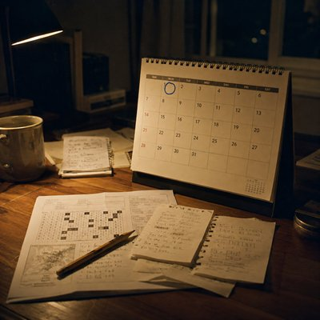

Sometimes, a single encounter opens the door to an entirely new world.
This song begins with a puzzle that seems to lead to the right place, but yields nothing. After marking it as a miss, the narrator learns that someone else has been paying attention. A few days later, she meets him at the same park and helps him find what he'd overlooked. What starts as a small act of kindness becomes an invitation to something much bigger.
The song then moves from an individual search to a monthly tradition: a group gathering around a table, sharing takeout, half-finished drinks, and ideas that lead from one possibility to the next. The narrator has been solving puzzles alone, but now he has a chance to join people who approach them together.
There's no grand promise about what lies ahead. Just a question, a yes, and the quiet excitement of knowing that the first of the month is coming.
I thought I had it right The numbers led me there I thought I'd looked everywhere but nothing was there Maybe I'd read it wrong Maybe I was simply blind I marked it as a miss Someone was paying attention She'd found it before She thought she could help She wanted to know if I'd gotten it right A few days later, the same park, the same corner We knew the place, not each other She was already there "It's still here" So I looked again And there it was Then she told me about the first of every month when something new would appear A world I knew had another world inside it Some chased the first Some chased the find She did it with friends Around a table takeout going cold glasses half full one thought chasing another One idea, then another A wrong turn becoming a clue And when they thought they had it they'd go and see I thought I could do it myself Maybe I could Maybe I could Then she asked "Want to join us?" I said yes I didn't know where it would lead I only knew I wanted to be there That night I looked through a few old ones Then I looked at the calendar The first was coming I didn't know what I'd be facing I just knew I couldn't wait